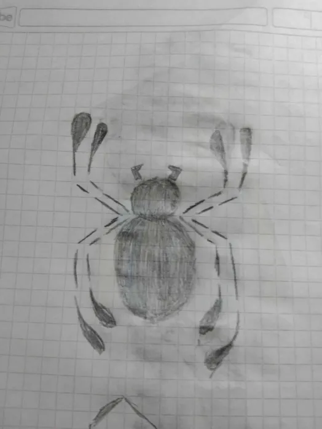

Como te podrás haber dado cuenta no he dicho nada referente a mis proyectos, así que aquí va una pequeña introducción. Mis proyectos tienden a ser algo medio ambicioso, ya he ensayado animar antes con Sprites, así que tengo un poco de experiencia básica. Sin embargo, quiero que mis proyectos vayan a un paso más allá. Quiero evolucionar para poder hacer proyectos en Live Action, teniendo en cuenta mi experiencia escribiendo guiones, sé que puedo formar algo bueno, pero quiero iniciar mi experiencia con fan-films antes de querer comenzar con un proyecto original que tengo en mente.
El primer proyecto fan-film que imaginé desde que tengo trece años de edad. Tomando de inspiración "Spider-Man: Far From Home" y que siempre he sido fanático del Hombre Araña, contando sus origenes con nuevos personajes, y diferentes medios. Contaría los origenes de un joven completamente diferente al de Peter Parker, con una familia más completa, enfrentándose por primera vez a Misterio y comenzando con su cruzada como el héroe que todos conocen. Tengo el plan de hacerlo un fan-film "Live Action" y hacerlo una saga de 5 películas cada una tratando un nuevo reto personal para el protagonista.


Este es otro de los proyecto fan-film al que más pasión quiero meter, siendo este de uno de mis personajes favoritos de los medios de entretenimiento. Solo que este trataría una historia diferente, teniendo a Maurice Boomer, alias Sonic, el erizo humano. Proyecto con el cuál he comenzado con el modelaje de por ejemplo, el escenario, un robot, e incluso el casco del protagonista. todavía faltan detalles por resolver
En este no me pienso extender mucho, al fin y al cabo está en proceso de desarrollo junto con otra historia. Pero este proyecto consiste en un joven que despierta después de una catástrofe. Sin embargo, no parece saber dónde está ni cómo llegó ahí, simplemente está ahí con un único propósito. Destruir a todos. No lo hace aún, todavía no entiende por qué debe hacerlo y su recorrido va a ser en busca de su genuinidad y su identidad por descubrir lo que fué y por qué terminó en ese lugar. Un proyecto que sí es probable que sea 100% animado pero nada está garantizado.